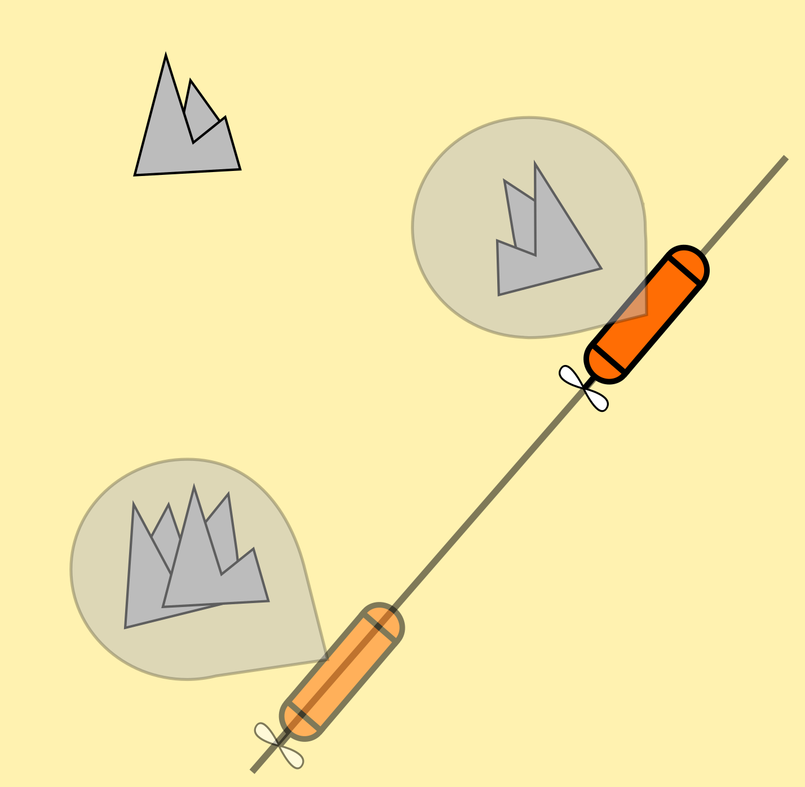
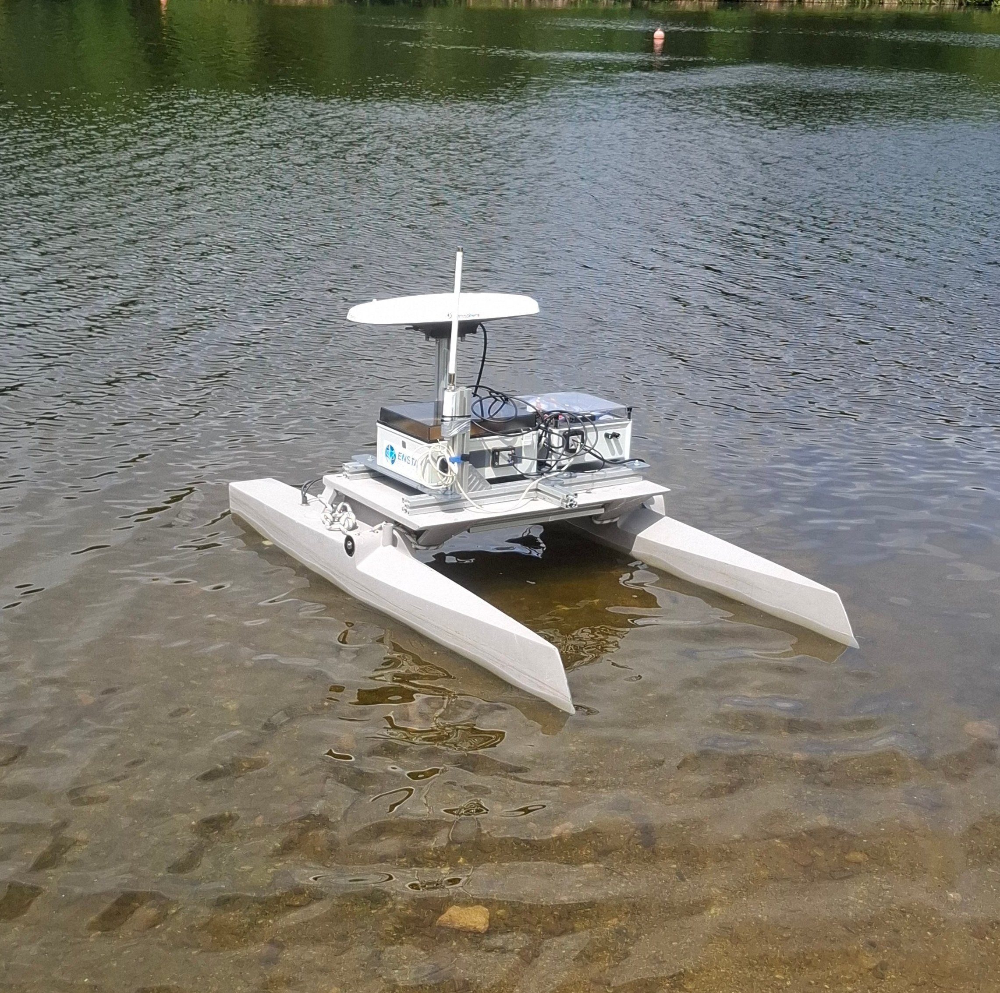

Contributions
Introduction : Safe navigation of a robot in a landmarked environment
In underwater robotics (between other use cases), it is not always possible for a robot to locate itself due to the lack of GNSS positioning. A way to paliate this issue is to use the environment itself to relocate the robot when possible. A classical way to do so is to rely on landmarks, i.e. on remarkable structures, to estimate the robot state.
To do so, the robot needs to be able to sense a landmark. Between each sensing, the robot has to navigate in the environment with no information. The objective of this work is to show a way to assert that the robot will end up sensing a landmark and will never be lost. Below is the current version of the manuscript.Thesis manuscript and Reviewer's reports
Adding jury composition and defense date.
Adding missing ../assets/imgs/photos_soutenance in the "Implementation" section.
Adding missing bibliographic references due to template change.
Template change.
First version of the manuscript, sent to the reviewers.
Thesis examples : Public repository
During the redaction of the manuscript, multiple codes have been written to illustrate concepts and show the effectiveness of the provided methods. As part of an open science approach, all of the codes used are available on a public Github repository. It is available at this address : https://github.com/godardma/thesis_example.Library : PEIBOS
The PhD thesis also lead to the creation of a library named PEIBOS. A dedicated page is available on this website : https://godardma.github.io/subpages/libs/parallelepiped.html. Note that this library is however not maintained anymore. Indeed, it relied on the
CODAC library for its interval computations.
It is now fully merged in the CODAC library and is distributed with it. The documentation of the PEIBOS
tool in CODAC is available here :
https://codac.io/manual/functions/peibos/peibos.html.
Note that this library is however not maintained anymore. Indeed, it relied on the
CODAC library for its interval computations.
It is now fully merged in the CODAC library and is distributed with it. The documentation of the PEIBOS
tool in CODAC is available here :
https://codac.io/manual/functions/peibos/peibos.html.
Datasets and drivers
Throughout the thesis, multiple experiment have been made with Hélios, an USV from ENSTA (approximately 2m long).
These experiments lead to the development of multiple drivers for the different sensors. These drivers are available on this website : https://godardma.github.io/subpages/libraries.html. Some datasets have also been made, a lot of them including ../assets/imgs/photos_soutenance taken with the Oculus Forward Looking Sonar (FLS). If you are interested in those datasets, feel free to reach me at this mail : mgodard00@outlook.com.Organization
The PhD defense will take place on Tuesday, 13 October 2026 at ENSTA, Brest site (2 rue François Verny, 29200 Brest). It will take place in F144 at 10AM and a visioconference will be available for anyone to attend remotely. Link of the visio : https://teams.microsoft.com/meet/326297215261350?p=txrXrkemLfknhcnbnp
Thesis defense
Jury
Reviewers
- Full Professor Michel Kieffer, HDR, L2S, Centrale-Supélec, France,
- Associate Professor Matthias Althoff, Technische Universität München, Germany.
Examinators
- Full Professor Goran Frehse, HDR, U2IS, ENSTA, France,
- Associate Professor Juliette Drupt, LIRMM, Université de Montpellier, France,
- Associate Professor Simon Rohou, Lab-STICC, ENSTA, France.
Supervisors
- Full Professor Luc Jaulin, HDR, Lab-STICC, Université de Bretagne Occidentale (UBO), France,
- Associate Professor Damien Massé, Lab-STICC, Université de Bretagne Occidentale (UBO), France.